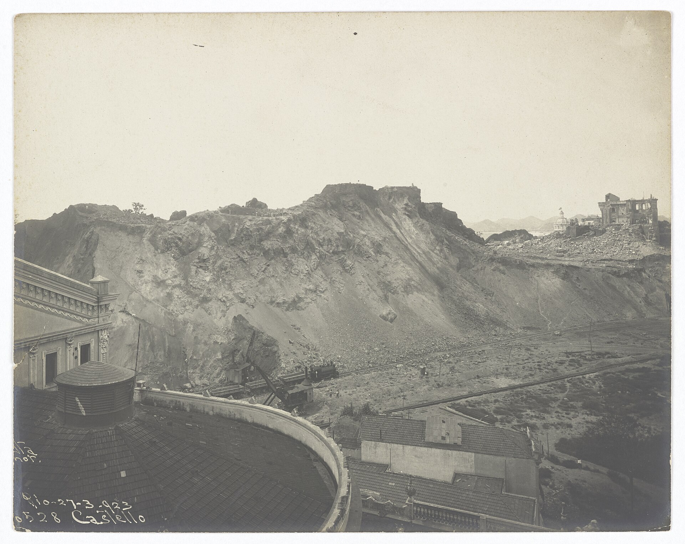
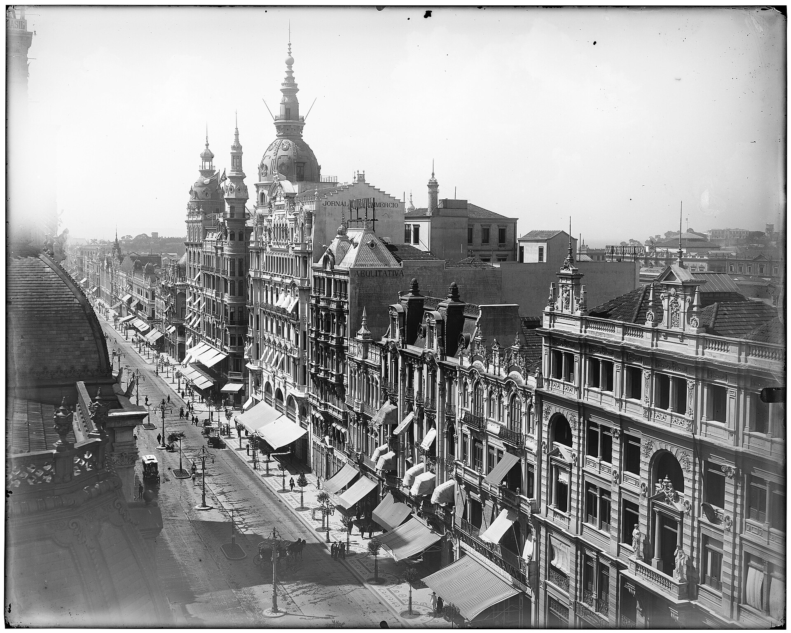

O porto e o morro
A abolição chega em 13 de maio de 1888, e com ela não chega terra, salário nem indenização. Chega a estrada. Do Recôncavo baiano desce para o Rio uma onda de gente negra liberta, atrás de trabalho. Ela se fixa onde o trabalho está: no porto. Gamboa, Saúde e Santo Cristo viram o lugar de quem carrega saco, lava roupa para fora e vende comida na rua.
Aquele chão já era africano antes de ter esse nome. Ali perto ficava o Cais do Valongo. No começo do século XX, a região ganha um apelido que diz tudo: Pequena África.

Aprofundar: a favela e o bota-abaixo
Em 1897, soldados que voltam de Canudos, sem o soldo prometido, ocupam a encosta do Morro da Providência e lhe dão o nome do morro baiano onde acamparam: Favella. A palavra fica para sempre.
Entre 1902 e 1906, o prefeito Pereira Passos rasga o centro em avenidas largas. Cortiços vêm abaixo aos milhares; o povo chama a reforma de bota-abaixo. Em 1904, a vacinação obrigatória acende a Revolta da Vacina. Quem é expulso sobe os morros ou se espreme na zona portuária.

Conta-se que ali, no Morro da Providência, cresceu uma menina mestiça chamada Maria. Nenhum papel confirma. Mas, se uma mulher pobre nascida entre o porto e a favela precisasse um dia de uma navalha, aquele era o lugar mais provável do Brasil para ela nascer.
Documento Tradição